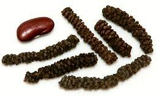
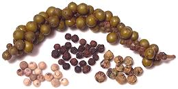

SAFARI
Users
Ashanti Pepper
 [Uziza (Nigeria); West African Pepper, Benin pepper,
False Cubeb, Guinea Cubeb; Piper guineense]
[Uziza (Nigeria); West African Pepper, Benin pepper,
False Cubeb, Guinea Cubeb; Piper guineense]
This plant is native to the tropics of West and Central Africa. Compared to Cubeb pepper it is less bitter and more herbal. It has a sharpness and flavor similar to black pepper, but much less intense, while interesting resinous flavors are more pronounced. The peppercorns are smaller than Cubeb, smooth and oval instead of round and rough. Production is not high so not much is shipped out of West Africa and it's relatively expensive even there.
Ashanti Pepper is sometimes used in the Berbere spice mix of Ethiopia, but due to its expense, Ethiopian Long Pepper is more often used. This pepper was well known in Europe during Medieval times but its use declined after the 14th century.
Uziza Leaves are used in West Africa, particularly in Nigeria as a
flavoring in Pepper Soups, Eguzi Soup and Oha/Ora Soup. If they leaves are
not available, the spice may be used to approximate the flavor.
Cubeb Pepper
 [Tailed pepper; Shital chini, Kabab chini (Hindi); Piper cubeba]
[Tailed pepper; Shital chini, Kabab chini (Hindi); Piper cubeba]
Unlike many things called "pepper", this one is actually a member of
the Piper genus along with black pepper. This plant is native
to Java in Indonesia and most today is still grown there. It was known
to the ancient Greeks as komakon, a corruption of it's Javanese name,
kumukus. It was popular in Europe until the king of Portugal banned
its sale in favor of black pepper (which he apparently had a financial
interest in) in 1640 and shipments pretty much ended by 1940. It is
still widely used as a spice in Indonesia. The taste is herbal and
much like green peppercorns, but it has much less sharpness. It has
also been widely used as a medicinal, from China to Europe.
Long Pepper - Ethiopian
 [African Long Pepper; Timiz (Ethiopia);Piper capense]
This pepper, related to the round black pepper, produces loose seed spikes
embedded with many tiny peppercorns, each inside a fruit capsule. The plant
is native to Sub-Saharan Africa, from Sierra Leone on the Atlantic coast to
the Ethiopian highlands in East Africa. It is found south as far as Angola,
Tanzania and South Africa. It is used as a spice mainly in Ethiopia and
Eritrea, but the whole plant is used medicinally use in other parts of Africa.
The photo specimens were up to 0.25 inch diameter and 1.9 inches long
(6.4 x 48 mm). Details and Cooking.
Long Pepper - Indian
 [Long Pepper; Piper longum]
[Long Pepper; Piper longum]
This pepper, related to the round black pepper, produces seed spikes
embedded with many poppy seed size peppercorns. These seeds have an
effect similar to black pepper but a bit sharper and more citrusy.
This pepper was very important in Europe from Roman times, but by the
14th century had been largely replaced by black pepper. This pepper is
still used in India, North Africa, Indonesia and Malaysia. The seed spikes
are quite hard, and need to be ground for use. The photo specimens were up to
0.27 inch diameter and 1.7 inches long (6.9 x 43 mm).
Details and Cooking.
Long Pepper Root - Indian
- [Pipramol, Peepramul, Ganthoda (India); Piper longum]
In India and parts of China, this root is used as both a medicinal and as a
culinary spice. The taste is earthy, lightly peppery, and slightly herbal.
The root is very hard, so it must be ground for use.
Details and Cooking.
Long Pepper - Javanese
[Balinese Long Pepper; Dei-Phle (Bangladesh); Dee'b Plee (Thai); Dei-Phlei (Cambodia); Cabe jawa (Indonesia); Piper retrofractum]
This plant is native to southern China and Southeast Asia, including
Indonesia and the Philippines. In most regions it is gathered in the wild,
but some is cultivated in India. It is very much like
Indian Long Pepper in both taste and
usage. In India it's used in curries, preserves and pickles. It is stronger
than Black Pepper,
but also sweeter. Both fruits and roots are used medicinally, and an extract
of the roots is effective against mosquito larvae.
Photo by Kembangraps contributed to the Public Domain.
Long Pepper - Thai
[Chui Jhal (Bangladesh); Dee Plee (Thai); Piper chaba]
This pepper, native to South and Southeast Asia, is used throughout
the region. In Bangladesh, the stems and roots are peeled, chopped and
used as a flavoring for meat dishes, particularly mutton, and tastes
somewhat like horseradish. In Thailand the fruits, which are orange-red
when ripe and black when dried, are used both fresh and dried,
pounded to paste or powder and added to various curry pastes, and
added to fish to cut the fishy flavor. Various parts of the plant are
used medicinally throughout the region.
Photo by Yercaud-elango distributed under license Creative
Commons
Attribution-ShareAlike 4.0 International.
Matico
[Soldier's herb; Piper aduncum]
This tree, which grows to 20 feet high, is native to southern Mexico,
the Caribbean and tropical South America. It is also grown in the
Pacific Islands, sometimes becoming an irritating invasive. The name
Matico is used in Peru, but in other South American countries the name
can refer to entirely unrelated plants. The long fruit spikes are
used as a substitute for Long Pepper
and in Peru are used to flavor cocoa. The leaves have medicinal uses,
particularly for treating wounds.
Photo by João Medeiros distributed under license
Creative Commons
Attribution-ShareAlike 2.0 Unported.
Pepper / Peppercorns - Black, White, Green, Red
 [Piper nigrum]
Black Pepper originated on the Malabar (south west) coast of India, but
major plantations were later established in Indonesia for trade with
the Dutch. It is now grown also in Brazil and several Southeast Asian
countries. Pepper has never been popular in Indonesia despite being
grown there, but has long been used in India and parts of Southeast
Asia, particularly before chilis were brought from South America. In
Europe it has been the most important spice since the Roman Empire
and was extremely expensive until the 18th century due to trade
monopolies.
Details and Cooking.
Selim Pepper
This spice is in no way related to the Pepper Family - see our Selim Pepper page.
Voatsiperifery
 [Madagascar Wild Pepper; Piper borbonense]
[Madagascar Wild Pepper; Piper borbonense]
This pepper grows wild in Madagascar, where the fruits are dried and used
as a spice called voatsiperifery. It is described as having an earthy,
woody flavor with aromas of citrus and flowers. While not as strong as Black
Pepper, it is quite sharp and the sharpness is lingering. Once very difficult to
find, it is now available on the Internet. The photo specimens were about
0.125 inch diameter (3.2 mm), purchased for 2021 US $3.80 / ounce.
Wild Betel
 [Cha phlu (Thai); Kahe (N. Thai); Lá Lôt (Viet); pokok kadok
(Malay); Phak i leut, Ak eelerd (Lao); Piper sarmentosum]
[Cha phlu (Thai); Kahe (N. Thai); Lá Lôt (Viet); pokok kadok
(Malay); Phak i leut, Ak eelerd (Lao); Piper sarmentosum]
This pepper plant, native to Southeast Asia is very similar to
Lalot, and the same names are often applied in Thai
and Vietnamese. The leaves have a light, pleasant bitterness that
compliments other foods. Leaves are used as wrappers for a popular Thai
snack called Miang kham, which may be served on open leaves, a
do-it-yourself kit with leaves and each ingredient separate, or as
pre-wrapped snacks. In northern Thailand it is the main ingredient in
Kaeng khae curry. In Laos and Malaysia leaves are shredded and
included in salads.
Photo by
Forest and Kim Starr
distributed under license Creative Commons
Attribution-ShareAlike 3.0 Unported, attribution required,
notification appreciated.
Lalot
 [Pepper Leaf; Lá
Lôt (Viet); Japloo, Jeeploo (Khmer); Chaphloo (Thai); Phak ee lert,
Phak nang lert (Lao); Piper lalot]
[Pepper Leaf; Lá
Lôt (Viet); Japloo, Jeeploo (Khmer); Chaphloo (Thai); Phak ee lert,
Phak nang lert (Lao); Piper lalot]
The practice of wrapping meat in leaves (dolma) traveled from Persia through India to Southeast Asia. They don't have grape leaves in Southeast Asia, so the Vietnamese took to using lalot leaves instead, wrapped around a beef sausage filling and called Thit bò là lôt. This leaf is also used extensively as a medicinal.
Lalot is often confused with the closely related
"Wild Betel" (Piper samentosum), which has
similar culinary uses. Both are slightly bitter and neither is nearly
as strongly aromatic as the related Betel Leaf. The photo specimens,
purchased from an Asian market in Los Angeles, were up to 4 x 5-1/4
inches and sold in 4 ounce bundles at 2012 US $14.99 / pound.
Betel Leaf
 [Paan; Piper betle]
[Paan; Piper betle]
Cultivated all through India and Southeast Asia, this leaf is best known
as the wrapper for a slightly narcotic chew called Paan. It is not the
highly aromatic (and fairly bitter) leaf that has the narcotic effect
and negative health impact (oral cancer, etc.), but the areca palm nut
and tobacco around which it is wrapped. The photo specimens, purchased
from an Asian market in Los Angeles, were 6-1/4 x 8 inches, 2012 US
$23.99 / pound.
Pepper Wood / Chili Wood
[Mai sakahn (Laos); Piper ribisioides also Piper interruptum]
The thick woody stems of this pepper vine are commonly used in Northern Laos and by Laotians in northeastern Thailand as a spice. Large splinters (1-1/2 x 1-1/2 inch and 1/4 inch thick) are included in soups and stews as a flavoring. It has a peppery flavor with hints of chili with a lingering aftertaste, and is somewhat numbing on the tongue. The berries are sometimes pressed for an oil that is also used as a spice. The plant is used medicinally.
If you can actually get some of this, it should be kept tightly
wrapped in the freezer, as it will dry out and turn black in a short
time. Subst: for a 1-1/2 x 1-1/2 inch 1/4 inch thick splinter,
use 1 teaspoon whole black peppercorns and 5
Sichuan Peppercorns.
Photo by Kirk K (cropped) distributed under license
Creative Commons
Attribution-NonCommercial-NoDerivs 2.0 Generic".
Hoja Santa
[Piper Sanctum; Yerba santa, Hierba santa, Mexican pepperleaf, Acuyo, Tlanepa, Anisillo, Root beer plant; Piper auritum]
This plant is native to Central America, extending into Mexico and
northern South America. The fresh leaves are used in Mexican cuisine
for flavoring tamales, soups, eggs and chocolate drinks. It is an
essential ingredient in the Oxacan "mole verde" sauce. These leaves
have a very distinct "root beer" like taste. The photo specimens were
9 inches long and up to 6-3/4 inches wide. They were purchased from a
large multi-ethnic market in Los Angeles at the incredible price of
2015 US $1.45 for 2 leaves, together weighing 3/8 ounce, or $61.87
/ pound.
Kava
[Kava-kava; Awa (Hawaii); Piper methysticum]
Roots of this plant are pounded and made into a tea which has sedative
and anesthetic properties. It has been traditionally used by natives
of the entire Pacific Island region, including Hawaii, particularly
during social gatherings. It is also available in the Western World
in supplement capsules and pills. These may also include leaves and
stems, somewhat controversial as islanders use only the root. Overuse
of Kava, particularly when combined with alcohol consumption is known
to result in severe liver damage and other health problems.
Photo by
Forest and Kim
Starr distributed under license Creative Commons
Attribution-ShareAlike v3.0 Unported, Attribution Required,
notification appreciated.
Fish Mint
 [Dap ca, Diep ca, Vap ca, Rap ca (Viet); Zhe'ergen, Yuxingcao (China);
Ja mardoh (Meghalaya India); Toningkok (Manipur India); Masunduri (Assam
India); Dokudami (Japan); Lizard tail, Chameleon plant, Heartleaf, Fishwort,
Bishop's weed; Houttuynia cordata of family Saururaceae
(lizard tails)]
[Dap ca, Diep ca, Vap ca, Rap ca (Viet); Zhe'ergen, Yuxingcao (China);
Ja mardoh (Meghalaya India); Toningkok (Manipur India); Masunduri (Assam
India); Dokudami (Japan); Lizard tail, Chameleon plant, Heartleaf, Fishwort,
Bishop's weed; Houttuynia cordata of family Saururaceae
(lizard tails)]
This is the only significant edible plant in order Piperales that is not in the Piper genus. Fish Mint leaves are used particularly in Vietnam, the far northeast of India, and in south central China, often raw as a garnish or salad ingredient, but sometimes cooked with other vegetables. In northeast India it is used raw, but also cooked in fish curry.
In south central China (Yunnan, Guizhou, Sichuan, western Guangxi) the long narrow rhizomes are eaten, usually raw in salads and the like. They are said to have a fresh peppery flavor.
Fish mint gets its name from having an unusual flavor which some people consider "fishy". This herb tends to wilt badly, but can be refreshed by complete immersion in cool water. The photo specimens, from a large Asian market in Los Angeles, had leaves up to 2 inches long and nearly 2 inches wide.
Variegated varieties are cultivated as decoratives under the name
"Chameleon Plant". The plant is used medicinally, particularly in
China. It can become a difficult to eradicate invasive, and
is considered as such in parts of the United States and Australia.
Canadian Snakeroot
[Canada Wild Ginger, Broad-leaved Asarabacca; Asarum canadense]
This plant is native to eastern North America, from the Great Plains
east to the Atlantic, and from Southern Canada to the Southeast of the
United States. The long, clumping rhizomes were harvested by Native
Americans as a flavoring ingredient similar to ginger. This use is
discouraged by the US FDA due to its causing severe kidney damage and
certain types of cancers. A distilled extract called Canadian Snakeroot
Oil has been used as a flavoring ingredient.
Photo by Wasp32 distributed under license
Creative Commons
Attribution-ShareAlike v4.0 International.